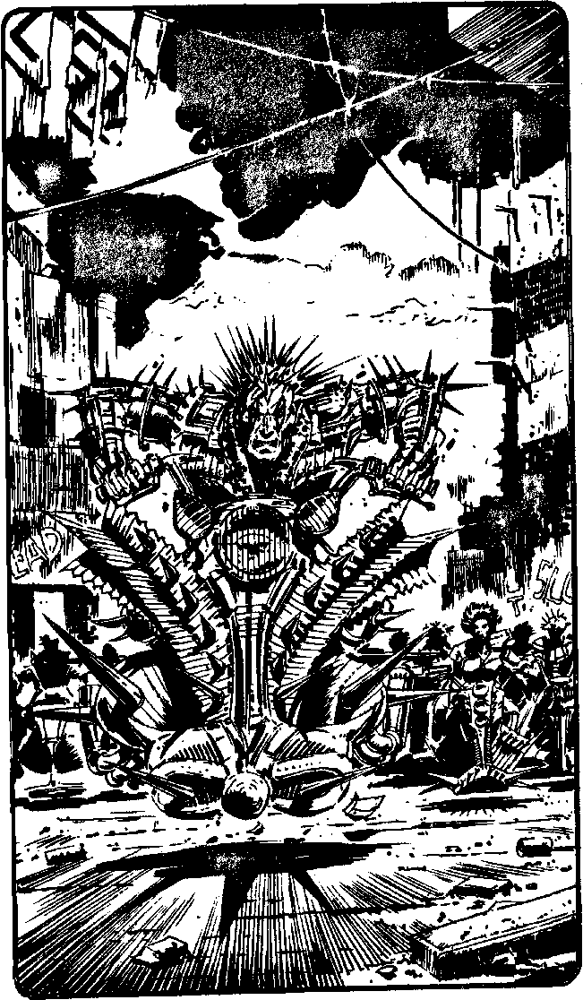

146
Turning left you move towards a junction only to find that the exits are blocked by barricades made of smashed hovmobiles and game-booths. You hear the unmistakable whine of hovbikes behind and, turning, are dazzled by ten or more floodlights, which flare suddenly. 'Well, well, an upper in the Morgue - hey, those epaulettes have real warp!' says a guttural voice, menacingly. 'What shall we do with the upper, Street'roids?'.
Then a woman's voice: 'I need that pacy helmet, Clone, get it for me?' The whine of the hovbikes increases as their lights are turned off in unison. Your eyes became accustomed to the gloom in time to see twenty or more members of a hovbike gang. Their archaic machines are loaded with rams, sharpened flanges and spikes. The riders' faces are painted silver and gunmetal, their clothes adorned with parts of the casing of various types of robot, hair spiked silver and gold.
'Get the Exec, Machine,' says Clone, their leader. A man wearing a tattered hydraulic suit, covered in spikes, races his bike at you. You dodge and he piles into the barricade, impaling himself on a snapped driveshaft. Clone signals and they all start towards you. Do you:
| Open fire with your blaster? | Turn to 55 |
| Thinkstrike Clone? | Turn to 42 |
| Use your Power of Will to control Clone? | Turn to 24 |